| 日付 | 2021年2月15日（月） - 2021年2月20日（土） | ||||||
|---|---|---|---|---|---|---|---|
| 山域 | 近畿の山 | ||||||
| メンバー | 単独 | ||||||
| 山行形態 | 5泊6日車中、避難小屋泊 | ||||||
| アクセス | 車 | ||||||
| ルート (Map1) |
|
2日目
五時起床。準備を整え登山口に移動。標高670m。
驚いたことに先行者がいて、車で到着したタイミングで出発して行った。
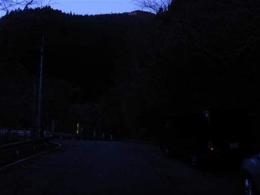
まだ薄暗いが最初は林道なので問題なく歩ける。
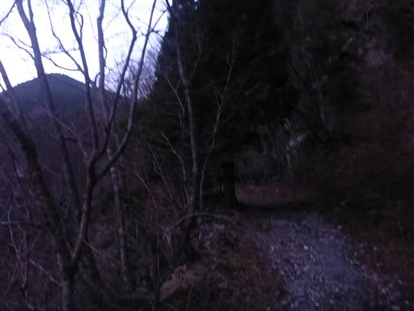
林道が大きく崩壊している。慎重に歩けば問題ない。
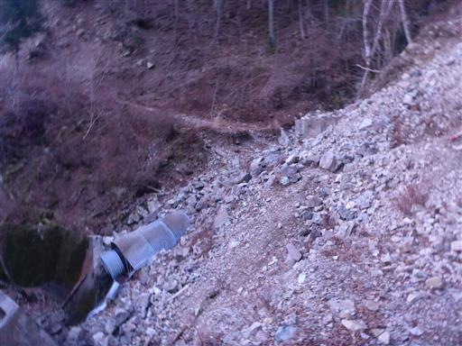
分岐点に到着。右が通常コース、左が沢沿いの双門コースだ。
今回は通常コースを歩く。
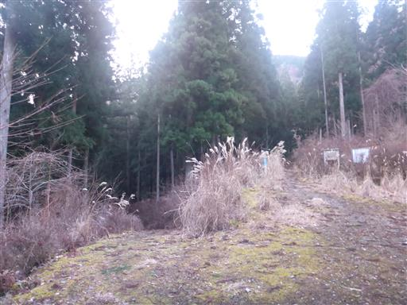
植林地帯の中を登って行く。
最初はあまり面白味のない道だ。
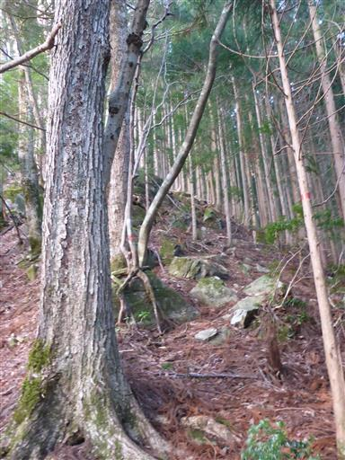
緑の杉の葉が大量に落ちている。昨日の暴風雨の影響だろうか？
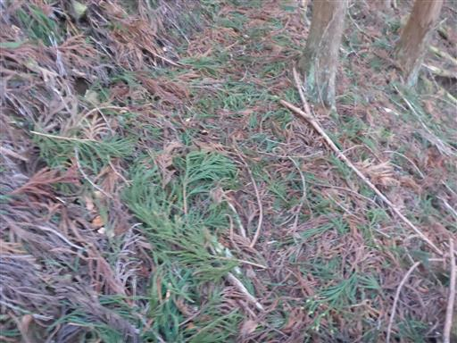
空がだいぶ明るくなってきた。
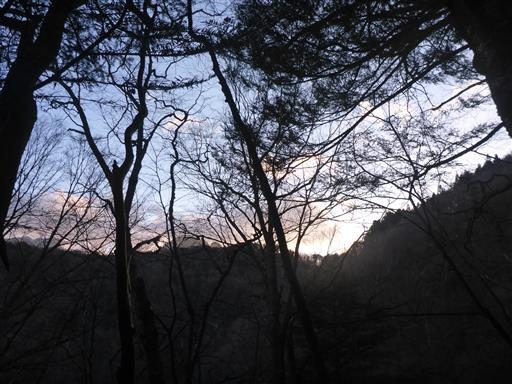
植林地帯の向こうから日が差している。
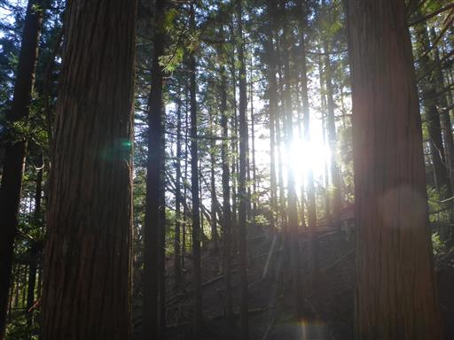
道を間違えそうなところにはロープが張られている。
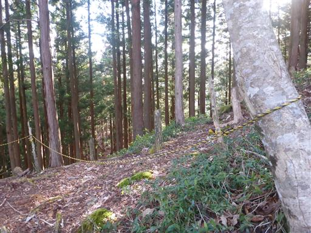
ところどころ自然林も混じるようになってきた。大木も見られる。
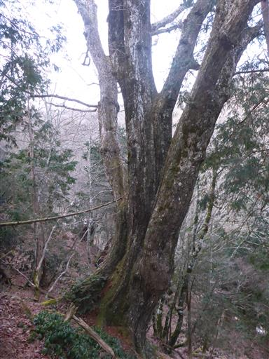
複雑な木の根。

少し雪が出てきた。登山道だけに雪があるのが嫌らしい。
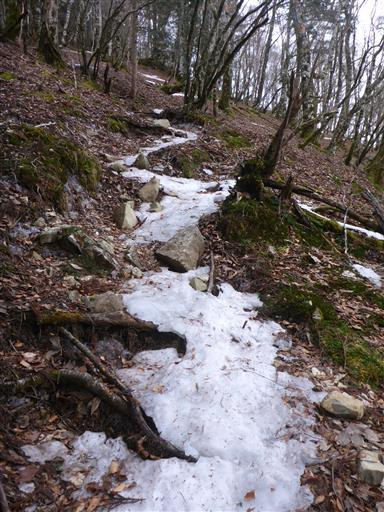
カナビキ尾根分岐に到着。
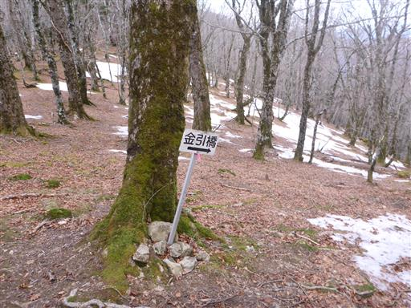
ここから広い道になって歩きやすくなるかと思ったらそうでもない。
雪が凍り付いているので、ここで4本爪軽アイゼンを装着。
お守り代わりに持ってきたのだが、持ってきてよかった。
アイゼンを使うのは10年振りだ。
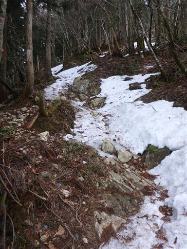
石が凍り付いている。
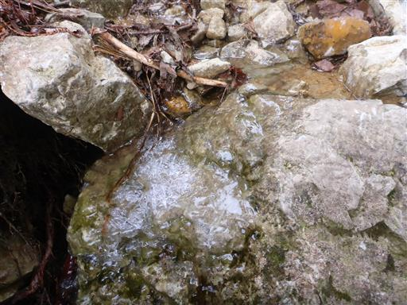
雪の量はだんだんと増えてくる。

登山道の様子。
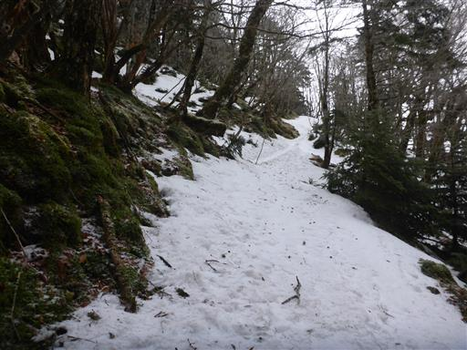
周囲は白く染まっている。
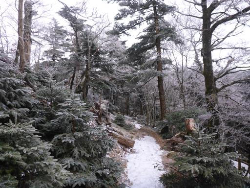
シラビソの葉は凍り付いてる。
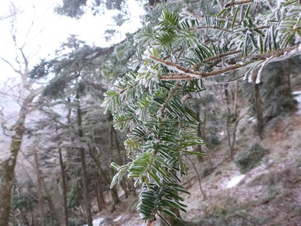
苔も白く染まっていて寒々しい。
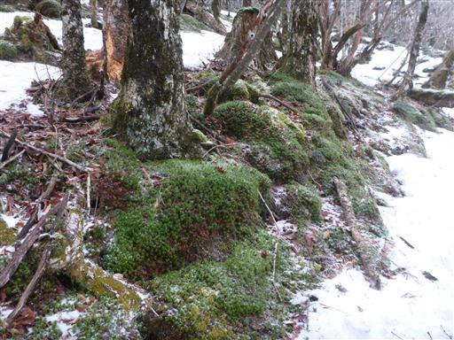
登山道だけ凍り付いていて歩きにくい…
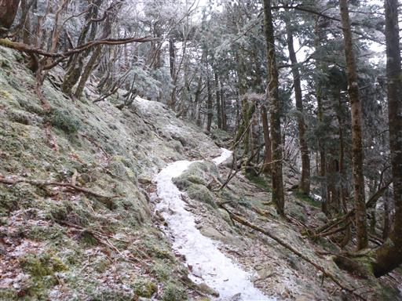
木の先っぽにつららができている。
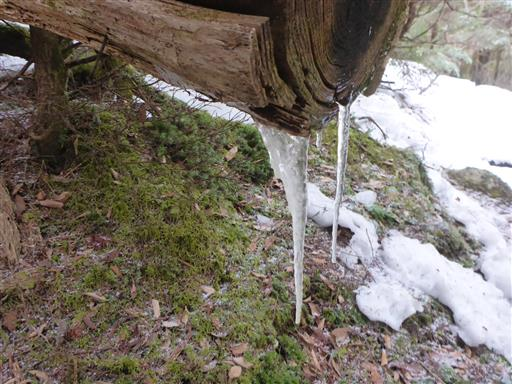
分岐点に到着。弥山→八経ヶ岳と行くか、八経ヶ岳→弥山と行くかの選択肢。
往路は前者を選択。
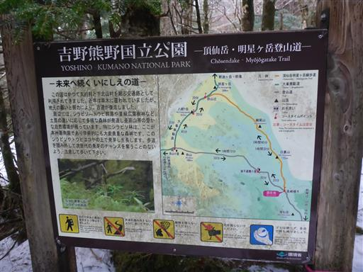
小さな沢を渡る。
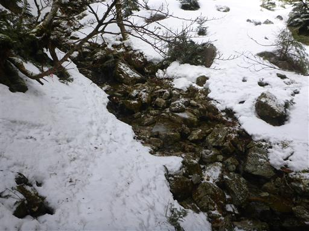
その直後の大きな沢は吊橋で渡る。
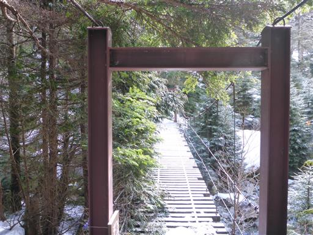
ここは双門滝コースとの合流地点。下りはこちらを歩いてみたい。
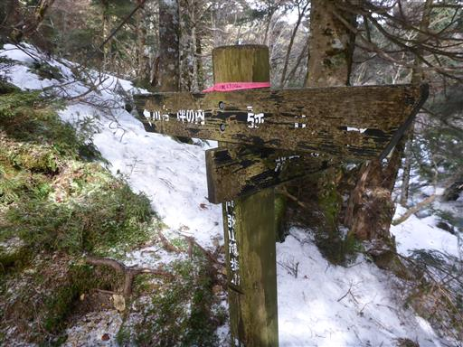
沢の側に狼平避難小屋が見えてきた。
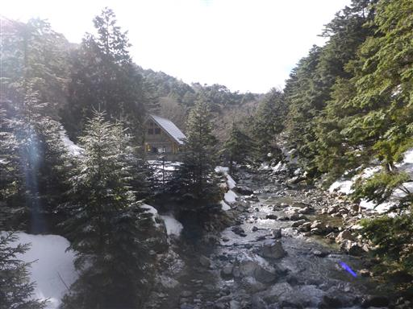
凍りついた氷が美しい模様を描いている。
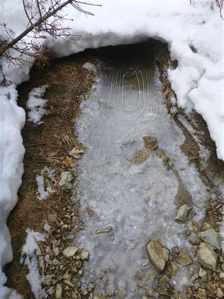
狼平避難小屋に到着。

小屋の内部。割ときれいだ。
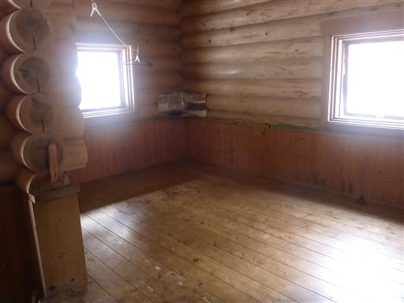
ここからだんだん雪が深くなってくる。ところどころ踏み抜いた跡がある。
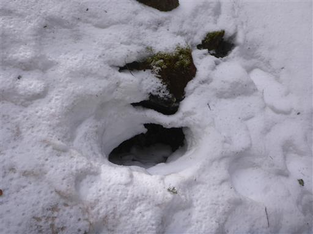
鹿除け網を通過。
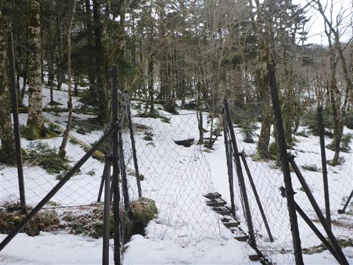
スノーシューで歩いた跡だろうか？
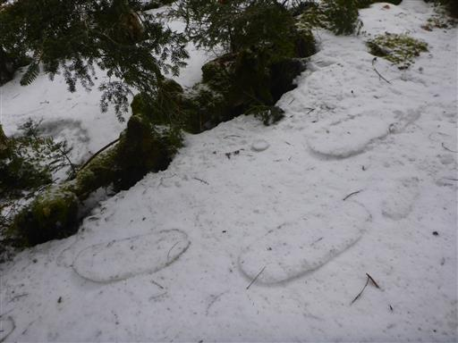
階段が出てくる。半分雪に埋もれていて歩きにくい。
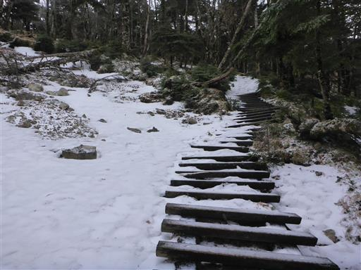
ペットボトルのお茶が凍り始めて飲みにくくなってきた。
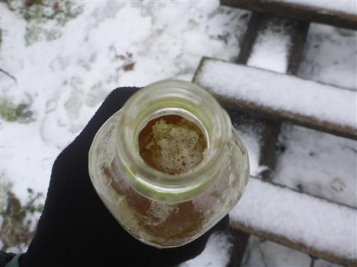
霧氷が美しい。
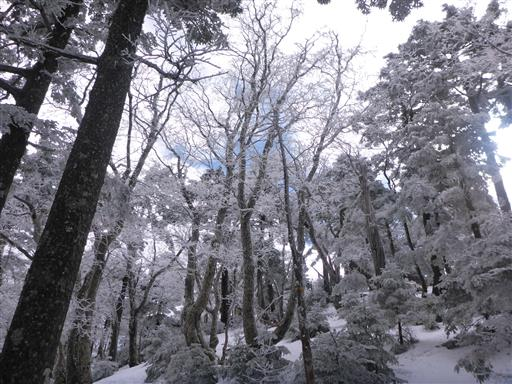
ところどころ青空も見られるが、弥山方面は雲に覆われている。
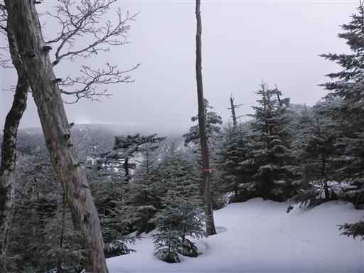
大黒岩に到着。大きくて一際目立つ岩だ。
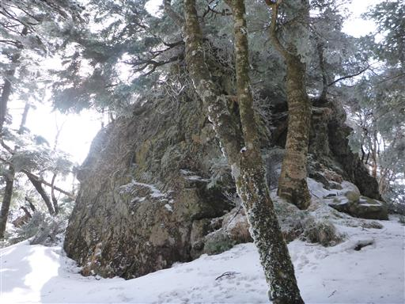
ここから道が分からなくなる。稜線は藪に覆われていて、トラバース道が正解だ。
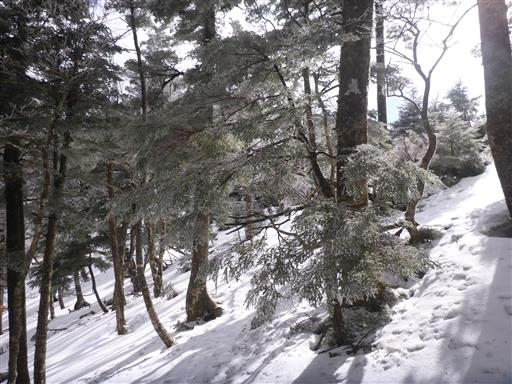
少し下ったところから大きく展望が広がる。
道に迷っていた間に弥山を覆っていた雲も取れたようだ。
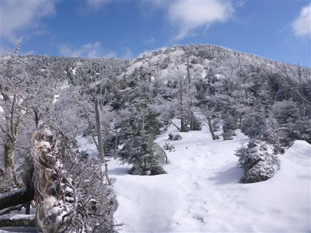
青空が出てきて、ますます霧氷が美しくなる。

シラビソも美しい。
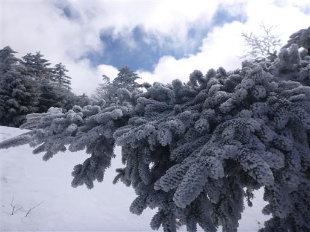
V字型に折れ曲がった木。
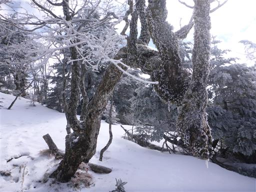
八経ヶ岳が見えてきた。
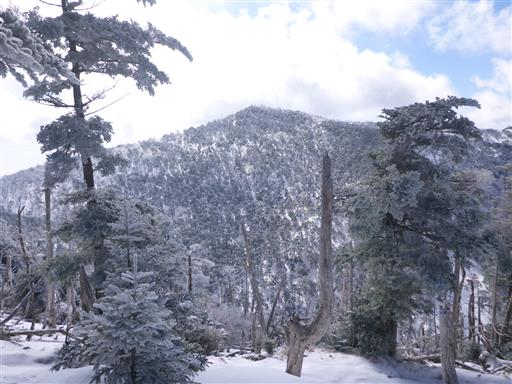
途中でネットに行く手を遮られる。夏道を探してネット沿いを歩く。
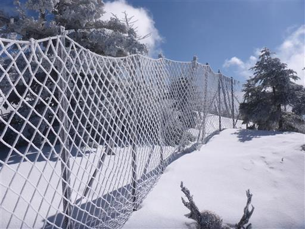
夏道発見。
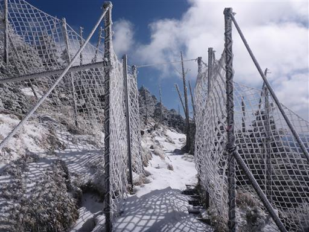
弥山に到着。大きな鳥居がある。
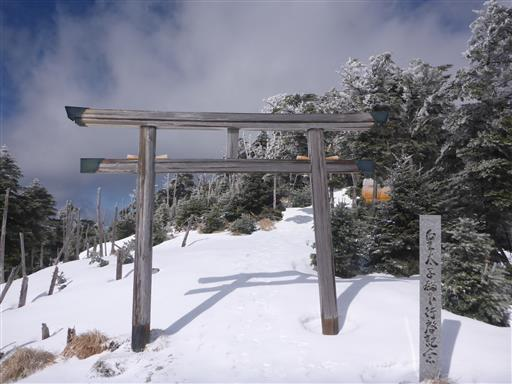
弥山には大きな小屋があるが冬季閉鎖中だ。
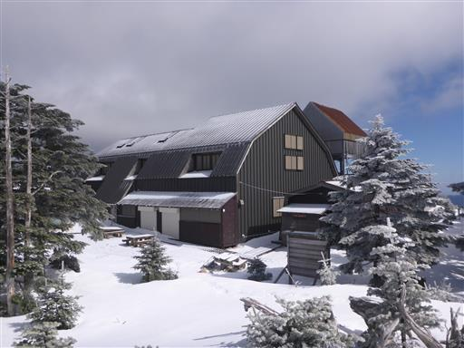
鳥居を潜って弥山山頂を目指す。
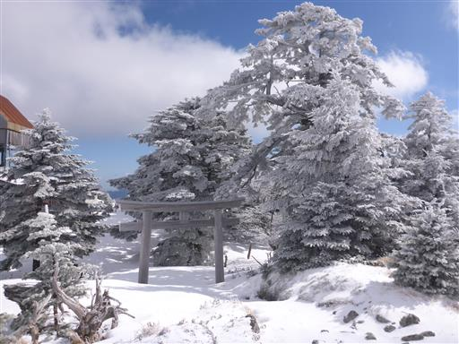
3分ほどで弥山山頂に到着する。標高1895m。
山頂には弥山弁財天社がある。

真白に染まった木。
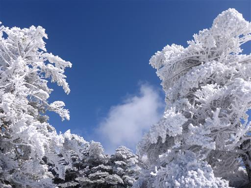
真正面に三角形の八経ヶ岳がよく見える。
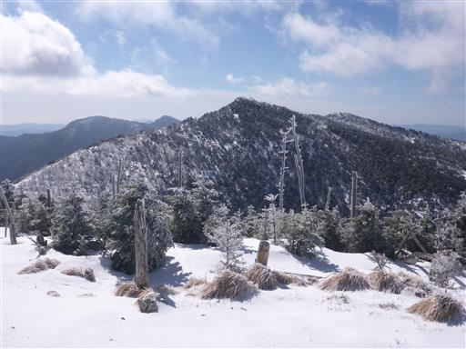
弥山小屋まで戻ってくる。ここには立派な標識がある。
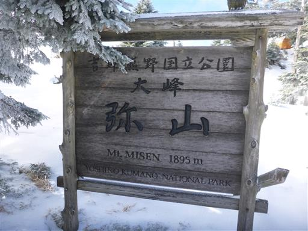
格好良い形の山を発見。大普賢岳だ。
是非登ってみたくなる形をしている。
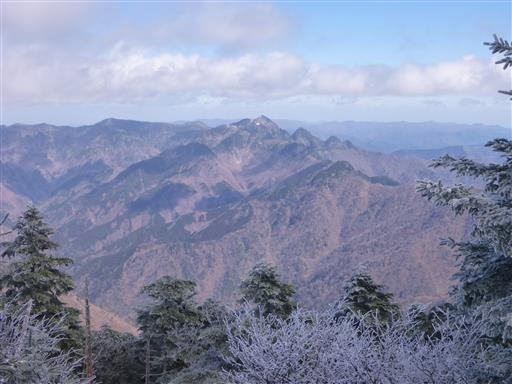
大峯奥駈道の標識。ここからしばらくはこの大峯奥駈道を歩く。
吉野から続く道で世界遺産に指定されている。
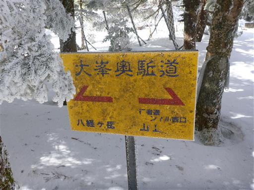
弥山と八経ヶ岳の鞍部から、八経ヶ岳を仰ぎ見る。
再びネットを発見。扉は雪に埋もれてこれ以上動かない。
ここを通過するのに難儀する。避難小屋泊装備なので、ザックが通らない。
樹林帯を抜けると絶景が広がる。
八経ヶ岳山頂に到着。標高1915m。
近畿地方の最高峰だ。
山頂部は凍り付いている。風が強く寒い。
遠くに見えるのは大台ヶ原。あっちは全く雪が無いように見える。
遥か下方に切れ込む大きな沢。白川又川だろうか？
この辺りの山域は沢登りの名コースが多いらしい。
これから目指す大峯奥駈道の稜線。
右奥に見えるのが目指す釈迦ヶ岳だ。
先ほど登った弥山が目と鼻の先に見える。
名残惜しいが、まだまだ歩く必要があるため、早々に山頂を後にする。
目の前の明星ヶ岳まで稜線を適当に歩く。
雪が深く、道は全然見えない。
天気が良いから歩けるが、雲に覆われて視界が奪われると迷いそうだ。

明星ヶ岳山頂に到着。標高1894m。
ここから釈迦ヶ岳に向けて稜線を歩き始める。
人が歩いた形跡が全くない。
切れ落ちた沢。
素晴らしい稜線。
何個か小さな瘤を通過する。
右に見えるのが八経ヶ岳。ここまで稜線を下ってきた。
標高を下げたのでだいぶ雪が少なくなってきた。
右奥が釈迦ヶ岳でその手前が楊枝ノ森。
本日の宿泊予定地はその奥にある避難小屋だ。
雪はあまりないが、この辺りに夏道は見当たらない。
その後、五鈷峰の辺りで稜線は崖に遮られて進めなくなってしまった。
夏道を探して西側の稜線を下ってみたが、どうしても夏道が見つからない。
強引に突破できそうな感じではあるが、大事を取って引き返すことにする。
急斜面を這い上がり、稜線に復帰する。
自分が往路に付けた足跡が、この上なく心強い。
予定が狂ったことで、今から日没までに右奥に見える八経ヶ岳まで登り返さなくてはならない。
困った時に頼りになるのは、最後は己の体力のみである。
夕方に近づくにつれてますます空は青くなり、霧氷が白く輝いてこの上なく美しい。

あれ？足跡が2つに増えている。途中で誰とも出会わなかったが…
八経ヶ岳に舞い戻る。
時間は15時。弥山はすぐそこ。
日没前に弥山に辿り着ける目途がついたため、八経ヶ岳でゆっくりする。
歩けなかった釈迦ヶ岳までの稜線。
思ったより地形が急峻で難易度が高かったが、目的地までたどり着けなかったのは心残りだ。
どこまでも続く山々。紀伊半島は本当に山深い。
遠く金剛山と葛城山が見える。こちらもいつか行ってみたい山だ。
山頂を出発し、弥山に向かう。雪で地面が高くなっているため、両側の枝が鬱陶しい。
シラビソの幼木。日が傾いて影がだいぶ長くなっている。
弥山に戻ってくる。

ちょうど雪のないベンチとテーブルを見つけたため、ここで夕食の準備。
しかし寒すぎてなかなかお湯が沸かず、強風で火はかき消されてしまった。
そして、じっとしているととにかく寒い。
避難小屋に逃げ込むことにする。
避難小屋内部。当然誰もいない。
小屋は一人三千円と少々高い。
そして三千円を入れるのに投入口はあまりにも小さい。
ちょうど鳥居の奥に陽が落ちていく。
山で夕陽を見るのは本当に久し振り。
大普賢岳が夕陽に染まって赤く輝いている。
大台ヶ原にも夕陽が差している。
日没の時間。
雲の向こう側に夕陽が消える。
日没直後の八経ヶ岳。
おやすみなさい。